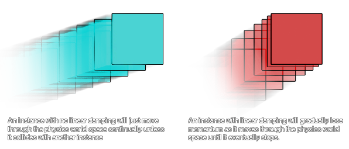

physics_fixture_set_linear_damping(fixture, damping)
| Argumento | Descripción |
|---|---|
| fixture | el índice del accesorio |
| damping | la amortiguación del accesorio, generalmente entre 0 y 1 |
Devoluciones: N / A
La amortiguación se usa para reducir la velocidad física mundial de las instancias, y difiere de la fricción en que la fricción solo ocurre cuando dos instancias con accesorios están en contacto. La amortiguación también es mucho más barata de simular que la fricción, pero tenga en cuenta que la amortiguación no reemplaza la fricción; los dos efectos pueden y deben usarse juntos. Aquí hay una imagen para ilustrar la amortiguación:

Los parámetros de amortiguación deben estar entre 0 e infinito, con 0 que significa no amortiguación, e infinito significa amortiguación completa. Normalmente usará un valor de amortiguación entre 0 y 1, pero puede usar cualquier valor no negativo si es necesario.
physics_fixture_set_linear_damping(fix_Ball, 0.1);
El código anterior configurará la amortiguación lineal del dispositivo indexado en "fix_ball" a 0.1.